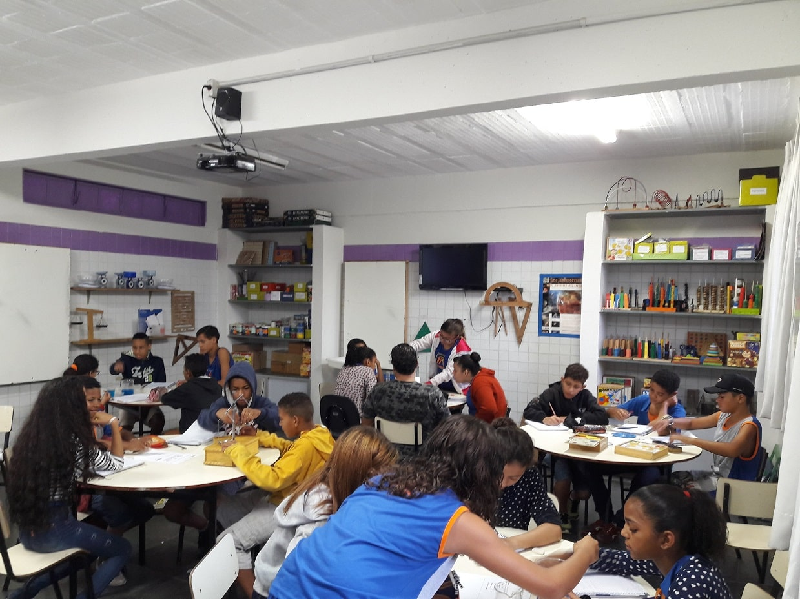
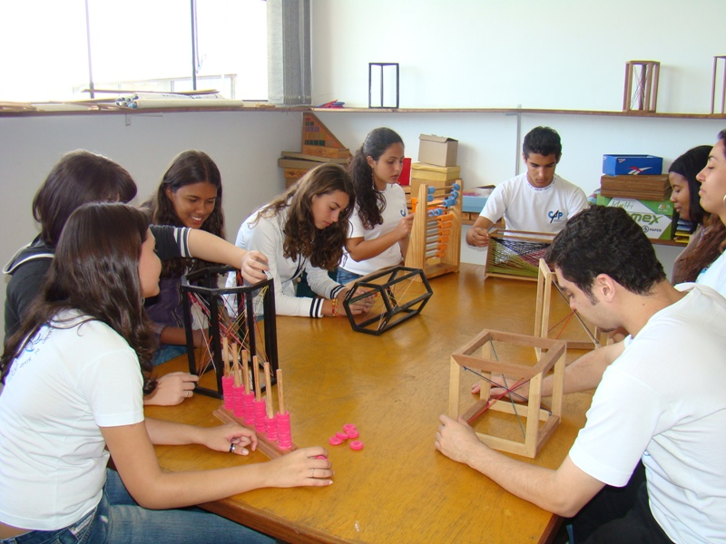
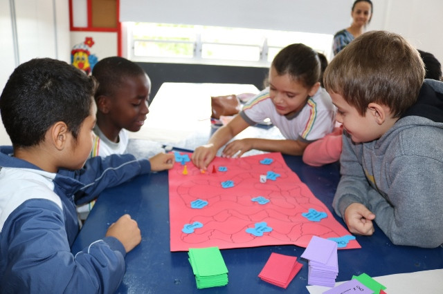

▌O QUE É O LABORATÓRIO DE MATEMÁTICA?
Já imaginou aprender matemática com jogos, peças coloridas, desafios e experiências práticas? O Laboratório de Ensino de Matemática é um espaço onde o aluno investiga, experimenta e relaciona os conceitos matemáticos de forma concreta e divertida!
▌POR QUE ELE EXISTE?

O laboratório surgiu da necessidade de tornar a matemática mais próxima da realidade do estudante. Em vez de apenas fórmulas no quadro, usamos materiais manipuláveis, jogos didáticos e atividades investigativas para estimular o raciocínio lógico.
▌OBJETIVOS DO LABORATÓRIO

- Desenvolver a compreensão dos conceitos matemáticos;
- Estimular a curiosidade e a investigação;
- Trabalhar em grupo e discutir ideias;
- Relacionar matemática com o cotidiano.
▌ IMPORTâNCIA DO L.E.M. PARA A FORMAÇÃO
DOCENTE

- Elaboração de materiais didáticos manipuláveis;
- Desenvolvimento de atividades investigativas;
- Construção de jogos matemáticos;
- Discussão crítica sobre métodos e tendências de ensino;
- Avaliação das práticas futuras em sala de aula;
- Trabalho colaborativo entre futuros professores.
▌POR QUE ELE MOTIVA OS ALUNOS?

Quando o aluno manipula, testa hipóteses e descobre respostas, a matemática deixa de ser assustadora e vira uma aventura! O laboratório transforma a sala de aula em um espaço de exploração, diálogo e criatividade.
▌NOSSA EQUIPE
Somos um time que acredita que aprender matemática pode ser investigativo, colaborativo e divertido! Trabalhamos juntos para criar experiências que despertam curiosidade, autonomia e pensamento crítico.